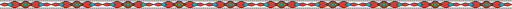

2026樂學島計畫文化島任務
布農族版曆
BUNUN CALENDAR
CHAPTER 05
布農族版曆・打耳祭
打耳祭：阿布斯的第一次神射
在群山與傳統的見證下，少年阿布斯完成生命中的第一次神射，
象徵勇氣、成長與對部落文化的理解。
數位繪本閱讀
板歷介紹
1、時間：約每年4至5月
2、目的：向祖靈祭祀，祈求來年的獵物和農作能豐收，將打獵的精神及技藝傳承下去。
3、過程：
(1) 男性舉行祭槍儀式：(2) 獵人們出發狩獵；(3) 婦女釀製小米酒；
(4) 將獵得的大型獵物下顎骨在祭典前將之掛在祭場的雀榕上。
(5) 鹿耳割下來，用一端被劈開的竹棍或木棍夾住，插在地上。
(6) 部落長老揉吹十二歲以下男孩的雙耳，祈求健康長大。
(7) 部落耆老指導小男孩如何用弓箭射中鹿耳。
(8) 成年男子使用弓箭射耳朵。
(9) 將祭拜的獸肉全部分完，然後開始喝酒、唱歌，並報戰功。
(10) 向獸骨進行祭儀，召喚動物靈魂，以求狩獵能豐收。
布農族版曆
文化・土地・生命

修蛋吉咧-青年志工團